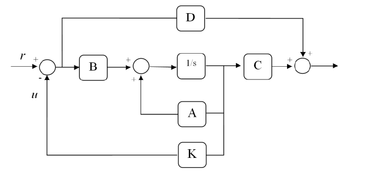
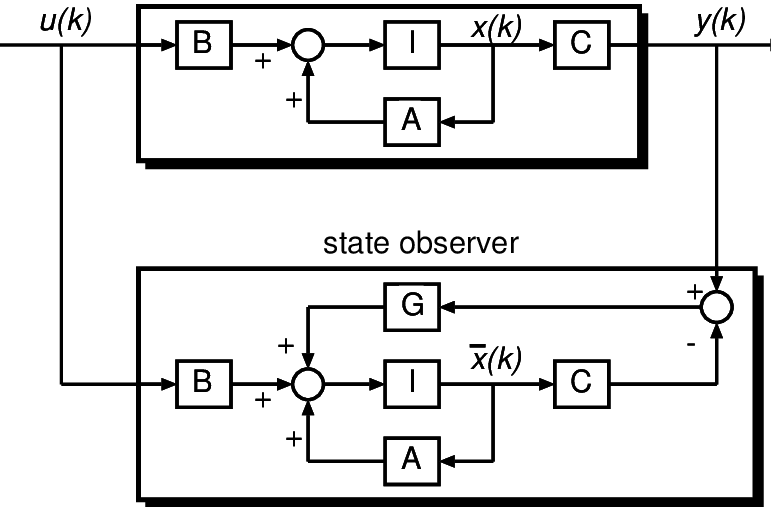

这一章主要关注利用反馈来控制线性定常系统的结构和参数，主要方法是配置极点、状态反馈镇定
状态反馈和输出反馈
对于一个控制系统来说，性能指标主要包含系统稳定性、瞬态性能和稳态性能。这些都可以通过极点配置来完成。
一个线性定常系统可以用状态空间表达式表示
从前面的知识，我们知道系统的状态空间表达式可以转化为传递函数
由上式可以看出，传递函数的极点就等于系统矩阵A的特征值，因此极点配置的目标就变成了系统矩阵的特征值，进一步，目标也可以视为改变系统矩阵
改变系统结构的方法主要是在原系统中添加反馈，按照反馈来源的不同可以分为状态反馈和输出反馈。
这里对控制律的概念加以说明：控制律就是指为了达到希望的系统性能，应该在被控对象的输入端加上怎么样的信号。
状态反馈
对于状态反馈而言，控制律：
V是r维的输入向量

系统的状态反馈系统方程为
K是一个行向量，在已知目标特征值时，求解K的方法一般是待定系数法。至于怎么确认目标特征值，超出了这里的范围。
- 状态反馈不增加新的状态变量
- 状态反馈对输入矩阵B和前馈矩阵D没有影响
- 不改变系统的能控性，但可能改变系统的能观测性
- 原系统能控的时候，状态反馈可以做到任意配置极点，但状态量通常是物理上不可直接观测或者难以测量的量，状态反馈经常是不可实现的
- 配置状态反馈时，没有考虑系统零点的影响
输出反馈

输出反馈和自控里看到负反馈形式类似。上图用矩阵K表示反馈矩阵，而课本上对输出反馈的矩阵表示为H，这里与书本保持一致。
输出反馈的控制律：
系统的状态反馈系统方程为
- 输出反馈没有增加新的状态变量
- 输出反馈不改变系统的能控性和能观性
- 输出反馈在物理上易于实现，但输出反馈改善系统性能较差，不能任意配置极点，只能任意接近min{n, r+1, m-1}个指定极点
配置极点求解反馈矩阵
实际问题中，几乎所有的系统都是能控制的，因此状态反馈几乎可以任意配置极点。
给定目标极点（特征值），使用待定系数法可以求解反馈矩阵。
- 待定$K=[k_0, k_1,k_2…]$
- 对$A^{} = A - BK$ 写出特征多项式 $|sI- A^{} =0|$
- 利用已知目标特征值，写出$\prod_{i=1}^n(s-\lambda_i)$
- 两个多项式对比逐项相等，求解出系数
状态重构与状态观测器
上面对状态反馈和输出反馈的讨论反映了一个矛盾：状态反馈配置极点的能力强但通常难以物理实现，输入反馈易于物理实现但极点配置效果往往不尽如人意。
为了解决这一矛盾，引入了状态重构的概念。
状态重构(state reconstruction)从量测信息中获得状态的过程。对给定的线性定常系统(A, B,C)，通常能为控制器提供的可用信号是输出y而不是状态x。然而有些控制系统设计方法中所需要的控制形式又恰是状态反馈u=Kx。因此，为了实现状态反馈，人们必须寻找一种方法，使得状态x能从量测y=Cx所提供的信息中构造出来，这就是状态重构问题.设(A,B,C)是能观测的，即可观测矩阵R。满足rank{R}=n(n为系统阶数)，直接计算可得
简单来说就是用输出量和输入量构造出状态量。实现状态重构的系统叫做状态观测器（也称重构器）。

系统重构状态表达式
- 系统状态观测器存在的充要条件是系统能观测，或者不能观测的子系统特征值具有负实部
- 状态观测器可以任意配置特征值的充分条件是系统能观测
原系统状态与重构系统状态的差值表达如下
可以设计G，让$(A-GC)$具有负实部，使得时间趋于无穷的时候，重构量与原状态量差值趋向0